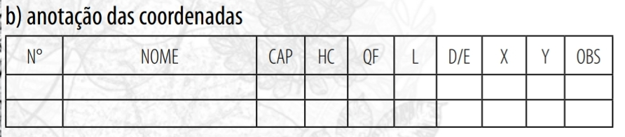

<!DOCTYPE html>
<html lang="en">
  <head>
    <meta charset="utf-8" />
    <meta name="viewport" content="width=device-width, initial-scale=1.0, maximum-scale=1.0, user-scalable=no" />

    <title></title>
    <link rel="stylesheet" href="dist/reveal.css" />
    <link rel="stylesheet" href="dist/theme/black.css" id="theme" />
    <link rel="stylesheet" href="plugin/highlight/zenburn.css" />
	<link rel="stylesheet" href="css/layout.css" />
	<link rel="stylesheet" href="plugin/customcontrols/style.css">


    <script defer src="dist/fontawesome/all.min.js"></script>

	<script type="text/javascript">
		var forgetPop = true;
		function onPopState(event) {
			if(forgetPop){
				forgetPop = false;
			} else {
				parent.postMessage(event.target.location.href, "app://obsidian.md");
			}
        }
		window.onpopstate = onPopState;
		window.onmessage = event => {
			if(event.data == "reload"){
				window.document.location.reload();
			}
			forgetPop = true;
		}

		function fitElements(){
			const itemsToFit = document.getElementsByClassName('fitText');
			for (const item in itemsToFit) {
				if (Object.hasOwnProperty.call(itemsToFit, item)) {
					var element = itemsToFit[item];
					fitElement(element,1, 1000);
					element.classList.remove('fitText');
				}
			}
		}

		function fitElement(element, start, end){

			const size = (end + start) / 2;
			element.style.fontSize = `${size}px`;

			if(Math.abs(start - end) < 1){
				return;
			}

			if(element.scrollHeight > element.offsetHeight){
				fitElement(element, start, size);
			} else {
				fitElement(element, size, end);
			}		
		}


		document.onreadystatechange = () => {
			fitElements();
			if (document.readyState === 'complete') {
				if (window.location.href.indexOf("?export") != -1){
					parent.postMessage(event.target.location.href, "app://obsidian.md");
				}
				if (window.location.href.indexOf("print-pdf") != -1){
					let stateCheck = setInterval(() => {
						clearInterval(stateCheck);
						window.print();
					}, 250);
				}
			}
	};


        </script>
  </head>
  <body>
    <div class="reveal">
      <div class="slides"><section  data-markdown><script type="text/template"># As árvores
#ficha 
</script></section><section  data-markdown><script type="text/template">
## Como a planta cresce?

<p style="line-height: 0" class="reset-paragraph"></img></p>

</script></section><section ><section data-markdown><script type="text/template">
### Teoria 1 - Consumindo terra

Jan Baptista van Helmont, médico, químico e físico flamengo, em 1600, realizou um famoso experimento cultivando um salgueiro em uma panela por cinco anos. Ao final desse período, a massa da árvore aumentou em 74kg, mas a massa do solo mudou pouco.  
</script></section><section data-markdown><script type="text/template">
Desta forma, Jan Baptista, acreditava que a água era a fonte de vida da planta, e a fonte da massa extra que supria o crescimento das plantas. Como você projetaria um experimento para provar a ideia de van Helmont de que a água era a fonte da massa extra?
</script></section></section><section ><section data-markdown><script type="text/template">
### Teoria 2 - Consumindo água

John Woodward, professor e médico da Universidade de Cambridge no final dos anos 1600, tentou projetar um experimento para testar a hipótese de Van Helmont de que a água era a fonte da massa extra. 
</script></section><section data-markdown><script type="text/template">
Em uma série de experimentos durante 77 dias, Woodward mediu a água consumida pelas plantas. Por exemplo, uma planta mostrou um ganho de massa de cerca de 1 grama, enquanto Woodward adicionou um total de quase 76.000 gramas de água durante os 77 dias de crescimento da planta - este foi um resultado típico. 
</script></section><section data-markdown><script type="text/template">
Woodward sugeriu corretamente que a maior parte dessa água era “extraída e transportada através dos poros das folhas e exalada para a atmosfera. Assim, a hipótese de que a água é o nutriente utilizado pelas plantas foi rejeitada.
</script></section></section><section ><section data-markdown><script type="text/template">
### Teoria 3 - Consumindo ar

Em agosto de 1771, Joseph Priestley, um químico inglês, colocou um raminho de hortelã em um espaço fechado transparente com uma vela que queimava o ar até que logo se apagou. 
</script></section><section data-markdown><script type="text/template">
Após 27 dias, ele reacendeu a vela apagada novamente e ela queimou perfeitamente no ar que antes não a suportava. E como Priestley acendeu a vela se foi colocada em um espaço fechado? Ele focou os raios de luz do sol com um espelho no pavio da vela.
</script></section><section data-markdown><script type="text/template">
Jan Ingenhousz levou o trabalho de Priestley adiante e demonstrou que era luz que as plantas precisavam para produzir oxigênio. No entanto, Jan Ingenhousz foi a primeira pessoa a mostrar que a luz é essencial para o processo da planta que de alguma forma purifica o ar contaminado por velas ou animais. 
</script></section><section data-markdown><script type="text/template">
Em 1779 Ingenhousz colocou uma planta e uma vela em um espaço fechado transparente. Ele permitiu que o sistema ficasse sob a luz do sol por dois ou três dias. Isso garantiu que o ar dentro fosse puro o suficiente para suportar a chama de uma vela. Mas ele não acendeu a vela. Em seguida, cobriu o espaço fechado com um pano preto e deixou-o coberto por vários dias. Quando ele tentou acender a vela, ela não acendeu. Ingenhousz concluiu que de alguma forma a planta deve ter agido na escuridão como um animal. Deve ter respirado, sujando o ar. E para purificar o ar, as plantas precisam de luz.
</script></section></section><section ><section data-markdown><script type="text/template">
## Conceitos de árvore

Veja que um objeto aparentemente banal como uma árvore, pode ser definido de diferentes formas.

- A árvore é um símbolo que liga o mundo espiritual com mundo material.
</script></section><section data-markdown><script type="text/template">
- A árvore é um vegetal de tronco lenhoso cujos ramos só saem a certa altura do solo.
</script></section><section data-markdown><script type="text/template">
- A árvore é uma planta que quando na idade adulta a copa se prolonga lateralmente, obstruindo a luz que atinge o solo.
</script></section><section data-markdown><script type="text/template">
- A árvore é uma planta permanentemente lenhosa, de grande porte, com raízes pivotantes, caule lenhoso do tipo tronco, que forma ramos bem acima do nível do solo e que se estendem até o ápice da raiz.
</script></section><section data-markdown><script type="text/template">
- A árvore é um ser vivo complexo formando por diferentes tecidos, dos quais se destacam os tecidos de sustentação conhecidos como colênquima e o esclerênquima. Estes tecidos é que garatem às árvores suporte mecânico.
</script></section><section data-markdown><script type="text/template">
- A árvore é um vegetal de grande porte, capaz de realizar processos bioquímicos como a fotossíntese e a respiração, durante os quais ocorrem a evapotranspiração. Este processo é composto pela evaporação da água das superfícies das folhas e galhos, mais a transpiração dos tecidos vegetais, onde a água passa para a atmosfera no estado de vapor e faz parte do ciclo hidrológico.
</script></section><section data-markdown><script type="text/template">
- A árvore é uma planta lenhosa perene com um único tronco principal, raramente formando multiplos troncos, que é ramificado na parte superior formando uma copa.
</script></section><section data-markdown><script type="text/template">
- Árvore é um vegetal de tronco lenhoso cujos ramos só saem a certa altura do solo. Em termos biológicos é uma planta permanentemente lenhosa de grande porte, com raízes pivotantes, caule lenhoso do tipo tronco, que forma ramos bem acima do nível do solo e que se estendem até o ápice da raiz.
</script></section></section><section ><section data-markdown><script type="text/template">
## Como vc descreveria uma árvore?

A descrição de um objeto é feito por atributos que considera-se relevante para que outra pessoas seja capaz de reconstruir e perceber o objeto que está sendo descrito.
</script></section><section data-markdown><script type="text/template">
Os engenheiros florestais irão descrever uma árvore por meio de atributos como:

- espécie
	- flor
	- folha
	- casca
	- cheiro
	- sabor
</script></section><section data-markdown><script type="text/template">
- atributos dendrométricos
	- dap
	- cap
	- altura total, comercial
	- altura e diâmetro da copa
	- altura da primeira bifurcação
	- volume
	- biomassa
</script></section><section data-markdown><script type="text/template">
- atributos de qualidade
	- qualidade do fuste
	- aproveitamento para serraria
</script></section><section data-markdown><script type="text/template">
- atributos ecológicos
	- nicho ecológico
	- luminosidade de copa
</script></section><section data-markdown><script type="text/template">
- atributos espaciais
	- localização geográfica
</script></section></section><section  data-markdown><script type="text/template">
Veja que estes atributos que são considerados importante na descrição da árvore irão compor a ficha de campo de um inventário florestal.

<p style="line-height: 0" class="reset-paragraph"></img></p>
</script></section></div>
    </div>

    <script src="dist/reveal.js"></script>

    <script src="plugin/markdown/markdown.js"></script>
    <script src="plugin/highlight/highlight.js"></script>
    <script src="plugin/zoom/zoom.js"></script>
    <script src="plugin/notes/notes.js"></script>
    <script src="plugin/math/math.js"></script>
	<script src="plugin/mermaid/mermaid.js"></script>
	<script src="plugin/customcontrols/plugin.js"></script>

    <script>
      function extend() {
        var target = {};
        for (var i = 0; i < arguments.length; i++) {
          var source = arguments[i];
          for (var key in source) {
            if (source.hasOwnProperty(key)) {
              target[key] = source[key];
            }
          }
        }
        return target;
      }

      // default options to init reveal.js
      var defaultOptions = {
        controls: true,
        progress: true,
        history: true,
        center: true,
        transition: 'default', // none/fade/slide/convex/concave/zoom
        plugins: [
          RevealMarkdown,
          RevealHighlight,
          RevealZoom,
          RevealNotes,
          RevealMath.MathJax3,
		  RevealMermaid,
		  RevealCustomControls,
        ],

		mathjax3: {
			mathjax: 'plugin/math/mathjax/tex-mml-chtml.js',
		},

		customcontrols: {
			controls: [
			]
		},
      };

      // options from URL query string
      var queryOptions = Reveal().getQueryHash() || {};

      var options = extend(defaultOptions, {"width":960,"height":700,"margin":0.04,"controls":true,"progress":true,"slideNumber":true,"transition":"slide","transitionSpeed":"default"}, queryOptions);
    </script>

    <script>
      Reveal.initialize(options);
    </script>
  </body>
</html>
